猫なのにメンフクロウ [梅吉]
オコジョみたいに見える事もありますが
時々鳥っぽく見える事もある梅吉。
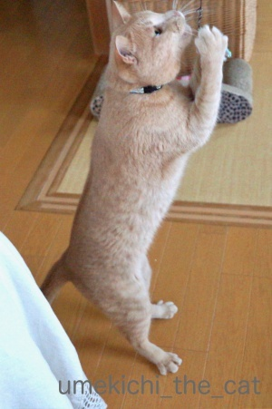
開いた足が鳥脚っぽい。
（鳥の脚はちょっと苦手なので画像はナシ (^_^;)）
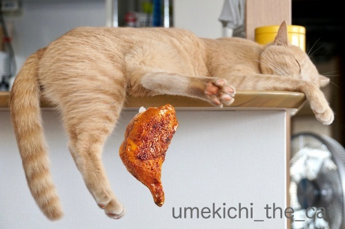
太ももはチキンレッグそのものw
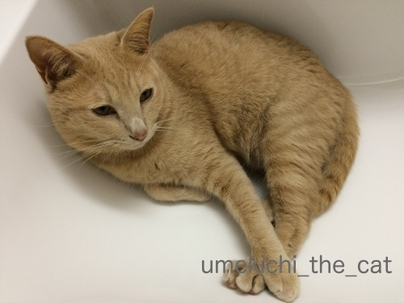
この写真に至っては「メンフクロウっぽい」と言われたことが！
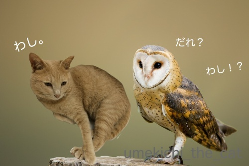
並べてみましたー(*>艸<)
鼻筋の通り方が似てるかも。
 ↑ガブッと一押し↑
↑ガブッと一押し↑
週末はなんばスカイオに出来た象印食堂に行ってきました。
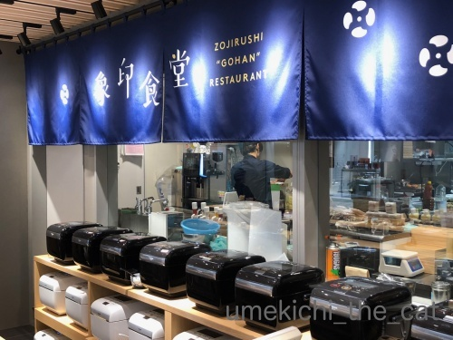
ここではかまど炊きの美味しさを再現すると言う最高級炊飯釜「炎舞炊き」
で炊いたご飯がいただけます。
ずらりと並んだ炊飯釜がそれです。お米にもこだわりがあるみたい。
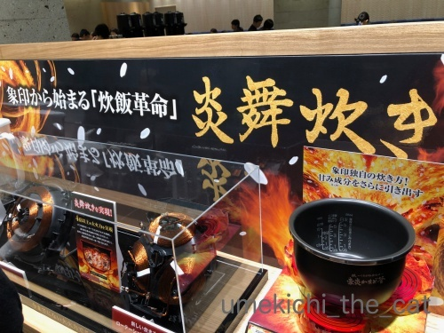
ショールームの様に製品の展示もしてあります。
1時間並んで（！！！！！）やっと着席。並ぶの嫌いなんですが頑張りました・・・
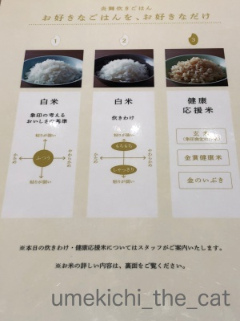
目玉のごはんは
「白米：普通に炊いたもの」「白米：炊き上がり選択（しゃっきりorもちもち）されたもの」
「玄米等を使用した健康応援米」の３種類。
おかわりは自由でその都度種類を選べます。
一膳目はそれぞれ「普通」と「しゃっきり」を選びました＾＾
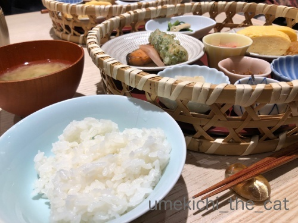
普通炊きご飯の写真。
写ってませんが向こう側のごはんはしゃっきり。
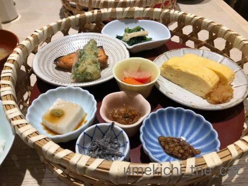
おかずはいずれもご飯の美味しさを引き立たせてくれる様なものばかりです。
ご飯はふっくら炊き上がりながらもちゃんと粒感が残っていて
口当たりも良くとっても美味しかったです。
おかわりは健康応援米を選びましたがこれはわざわざこの店で食べなくても良いかな。
高級炊飯釜の真価は白米で問うべし、と思いました。
満足した後は・・・
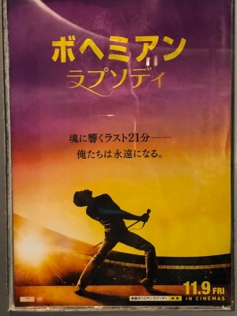
映画「ボヘミアン・ラプソディ」をIMAXシアターで観てきました。
フレディの生涯を軸にバンドの誕生からフレディが亡くなるまでを描いています。
映画の冒頭20世紀フォックスのファンファーレからクイーンバージョン。
ブライアン・メイの様なギターの音色。この時点でもう鳥肌！
フレディ始め他のメンバー役の俳優さんも「よくぞここまで」と言うほどのコピーっぷりで
まるで本物のクイーンを見ている様な錯覚に陥る事も。
特にベースのジョン・ディーコンの激似っぷりは笑っちゃうくらい。
ストーリーの方は当時のクイーンの勢いそのままに突っ走るので
見ている方もグイグイ引き込まれていきます。
70年代クイーンの全盛期、私は小学生。
当時は兄が聞いていたのでなんとなく馴染みはあったのですが
ちゃんと聴いたのはフレディがなくなってアルバムが再リリースされた頃です。
そんな私でも思い入れたっぷりに観たので
リアルにクイーンを体験した方はさらに思い入れたっぷりで・・・
（おっとがまさにそれw）
フレディがエイズキャリアになったことをバンドのメンバーに打ち明けてから
バンド復活とも言える「ライブ・エイド」再現ステージの21分間
涙なしでは観られません・・・
134分、あっという間でした！
お好きな方は是非IMAXシアターでご覧になることをお勧めします。
音が素晴らしいです！！
時々鳥っぽく見える事もある梅吉。
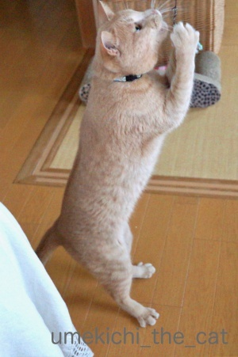
開いた足が鳥脚っぽい。
（鳥の脚はちょっと苦手なので画像はナシ (^_^;)）
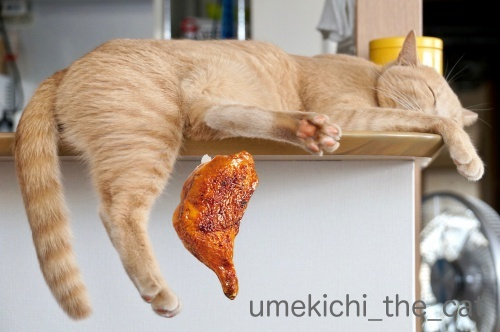
太ももはチキンレッグそのものw
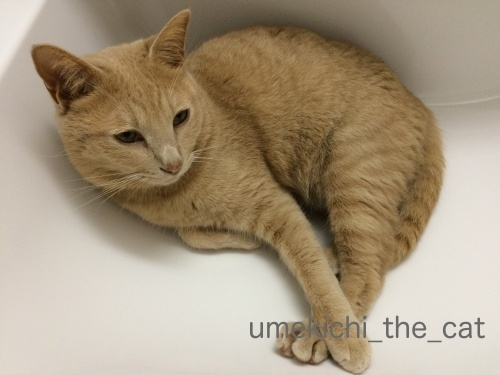
この写真に至っては「メンフクロウっぽい」と言われたことが！
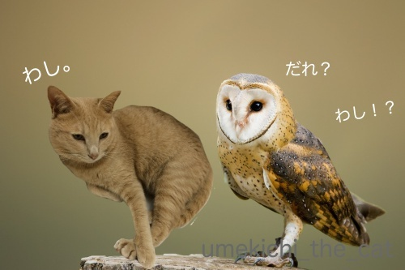
並べてみましたー(*>艸<)
鼻筋の通り方が似てるかも。
週末はなんばスカイオに出来た象印食堂に行ってきました。
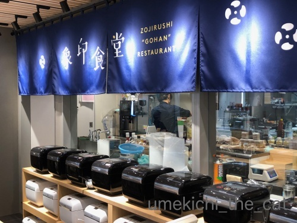
ここではかまど炊きの美味しさを再現すると言う最高級炊飯釜「炎舞炊き」
で炊いたご飯がいただけます。
ずらりと並んだ炊飯釜がそれです。お米にもこだわりがあるみたい。
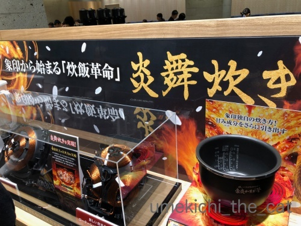
ショールームの様に製品の展示もしてあります。
1時間並んで（！！！！！）やっと着席。並ぶの嫌いなんですが頑張りました・・・
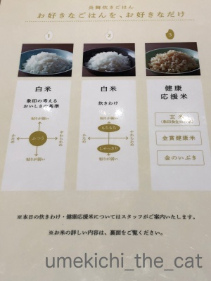
目玉のごはんは
「白米：普通に炊いたもの」「白米：炊き上がり選択（しゃっきりorもちもち）されたもの」
「玄米等を使用した健康応援米」の３種類。
おかわりは自由でその都度種類を選べます。
一膳目はそれぞれ「普通」と「しゃっきり」を選びました＾＾
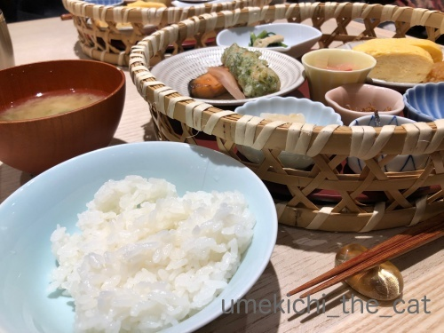
普通炊きご飯の写真。
写ってませんが向こう側のごはんはしゃっきり。
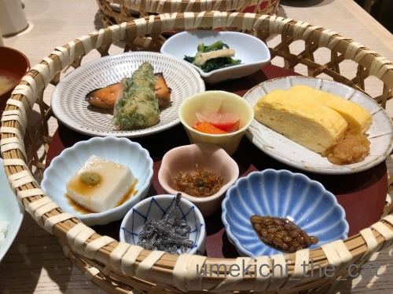
おかずはいずれもご飯の美味しさを引き立たせてくれる様なものばかりです。
ご飯はふっくら炊き上がりながらもちゃんと粒感が残っていて
口当たりも良くとっても美味しかったです。
おかわりは健康応援米を選びましたがこれはわざわざこの店で食べなくても良いかな。
高級炊飯釜の真価は白米で問うべし、と思いました。
満足した後は・・・
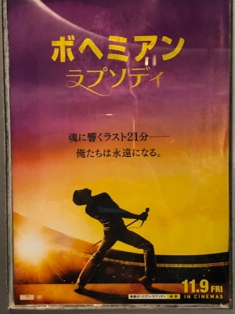
映画「ボヘミアン・ラプソディ」をIMAXシアターで観てきました。
フレディの生涯を軸にバンドの誕生からフレディが亡くなるまでを描いています。
映画の冒頭20世紀フォックスのファンファーレからクイーンバージョン。
ブライアン・メイの様なギターの音色。この時点でもう鳥肌！
フレディ始め他のメンバー役の俳優さんも「よくぞここまで」と言うほどのコピーっぷりで
まるで本物のクイーンを見ている様な錯覚に陥る事も。
特にベースのジョン・ディーコンの激似っぷりは笑っちゃうくらい。
ストーリーの方は当時のクイーンの勢いそのままに突っ走るので
見ている方もグイグイ引き込まれていきます。
70年代クイーンの全盛期、私は小学生。
当時は兄が聞いていたのでなんとなく馴染みはあったのですが
ちゃんと聴いたのはフレディがなくなってアルバムが再リリースされた頃です。
そんな私でも思い入れたっぷりに観たので
リアルにクイーンを体験した方はさらに思い入れたっぷりで・・・
（おっとがまさにそれw）
フレディがエイズキャリアになったことをバンドのメンバーに打ち明けてから
バンド復活とも言える「ライブ・エイド」再現ステージの21分間
涙なしでは観られません・・・
134分、あっという間でした！
お好きな方は是非IMAXシアターでご覧になることをお勧めします。
音が素晴らしいです！！

カフェオレ色の梅吉

梅吉 2023年8月10日 永眠


梅吉と出会った譲渡会

犬猫の理由なき殺処分ゼロ
妄想広告
UMEKICHI 光

爆発的に早い！
時々攻撃的！
Thanks to Mr.Boss365
爆発的に早い！
時々攻撃的！
Thanks to Mr.Boss365

鳥足に鶏モモですか~。メンフクロウも並べて見るとなるほどですね。鳥に似てる猫は初めてかもしれません。どこぞの親父に似てる猫ならよくいますけど。
by zombiekong (2018-11-12 02:02)
お早う御座います。(^_^;)
なぜか鳥ニャンコが美味しそうに見えてきた(-_-;)。
by 旅爺さん (2018-11-12 05:54)
梅吉さん、本当は鳥さんだったりして～～^^
by ニコニコファイト (2018-11-12 06:41)
梅吉さん、メンフクロウと並んだ写真は
確かに似てます♪( ´▽｀)
うちの大御所は小さい頃、キャットタワーの穴に入ってる時に
かみさんに「フクロウみたい」と言われましたが
どんどん育ったので今では穴に入ることも出来ないし、
フクロウと言うにはデカすぎます(⌒-⌒; )
by ニッキー (2018-11-12 07:32)
やっぱり梅吉さんの色が大きく影響してるような？＾＾；
by ぽちの輔 (2018-11-12 07:46)
この映画、見たいー！！
絶対泣いてしまうと思う私(^_^;)
by よーちゃん (2018-11-12 08:50)
梅吉さんの足にかぶりつかないように
気をつけなくては（笑
by きぃ (2018-11-12 09:43)
似てますよ〜が本当に似てますね。
わし？だれ？の掛け合いも面白い（笑）
1枚目の写真、鳥脚以上に祈りの姿？捕まえた？
梅吉さんの姿が良いですね。
1時間、辛抱強く並びましたね〜
出し巻き卵が美味しそうです。
by kiki (2018-11-12 09:53)
確かに梅吉さん似ていますね！
ボヘミアン・ラプソディーは久しぶりに見たい映画です(^^)
by ma2ma2 (2018-11-12 10:44)
ウチのもイカ耳になるとミミズクそっくりですが、梅吉さんも似てますね(#^^#)
私もこてつの後ろ脚を見るたび、鳥のもも焼きにそっくり～♪とニギニギして怒られて噛まれてます(≧▽≦)
フレディ・マーキュリーが亡くなった時は泣きました。
最初ラジオで聴いて声に惚れて、後々バレリーナのような白タイツをはいたヒゲのおっちゃんだと知ってひっくり返ったのを思い出します^^
あかんわ～ちぃさんの記事読んだだけで胸の奥がぎゅう～んとなります・・。
象印食堂、ご飯大好きなので興味津々です♪
ウチにあるのは「極め炊き」お釜がめっちゃ重くて洗うの大変です^^;
by ゆきち (2018-11-12 12:53)
こんにちは。
梅吉君！！新種のオコジョ？になれます（笑い）！！可愛いです！！
お祈り職人にも見えます！！ゴッド・ブレス・ウメキチ？
太ももはチキンレッグより美味しそうな形してます・・・危ない感じ？
ちぃさん！！（笑）比較写真がジャストフィット！！ちぃさんも職人です。
梅吉君の顔がフクロウ・ミミズク？に似ている。猛禽類？まさに鳥ですね。
FMで「ボヘミアン・ラプソディ」特集していたので、興味あり観たい映画です。
クイーン自体は、余り知らないのですが、ボウイ・ファンのBoss365は、
８１年のデビット・ボウイとクイーンのコラボ「Under Pressure」で知った感じです。
数年前のマックCMソング？かな。
クイーンのベーシストがカッコイイ！？観たいな・・・・！？(=^･ｪ･^=)
by Boss365 (2018-11-12 14:01)
梅吉さんの太ももは、何度見ても美味しそうな良い形です（笑）
by kiki (2018-11-12 15:05)
ぽいっ！ぽいよ～っ！鳥っぽいよ～ｗ
メンフクロウも戸惑うくらいｗ似てるよ～(*^-^*)
にゃんこってたまにフクロウっぽくなるよね。
家にはこぶたの丸焼きも居るよ・・・(^-^;
映画、夫と観に行こうって言ってるんだけど。やっぱり泣いちゃうのね・・・。
私も小さい頃から洋楽ばかり聞いてたよ。今もそのまま。
たくさんのアーティストがこの世を去ったけど・・・。
フレディが亡くなった時が1番ショックだった。
映画観に行って良かったらBlu-ray買う！
by emi (2018-11-12 17:10)
あははは(笑)
どれも似てる！ｗｗ
梅吉君はいろんな子になれるんですね〜。
ほぅほぅ、ちぃさんは鳥の脚はちょっと苦手なのですね。
そうすると若冲の鶏の絵も逃げてなのかな。脚リアルだよね。
炎舞炊きのゴハン、食べてみたい^^
美味しい白米食べたいな〜〜
by リュカ (2018-11-12 17:36)
梅吉さん、百面相だけじゃない、まで？
猫の太ももはちょっとチキンレッグには似てますよね。
メンフクロウ！
まさかの激似～＾o＾
ご飯おいしそうですねえ～せめて、おかずを真似しよう＾＾
ボヘミアン・ラプソディよかったんですね！ 特に大ファンというのではないけれど、当たり前に好きで聞いていました＾＾
by sana (2018-11-12 18:44)
鶏モモとワシ、かなり受けてしまいました(^_^)
映画「ボヘミアン・ラプソディ」は昨日観てきました。70年から80年代は小中学生～高校生でしたが大好きなグループでした。今でもクイーンのレコードが何枚もありますが、昨日この映画に感動し、あらためてCDを購入してしまいました。
by kou (2018-11-12 18:49)
チキンレッグ、確かに似てる。美味しそう♪ ^^;
メンフクロウも確かに似てる～！
そうそう。メンフクロウの顔って、アンスリウム（だったかな？）の花にも似てますよね。
ご飯が食べられさえすれば幸せな私は逆に白米オンチで味の違いが分からないので（汗）、炎舞炊きのご飯の味がどれほどのものなのか、食べてみたいです。
「ボヘミアン・・・」見てみたいなあ。
ジョンディーコン煮（字が違う！”似”！）の俳優さんもぜひ見てみたいです。^^;
by yes_hama (2018-11-12 21:21)
あかりも、フクロウっぽいな…と思ったことが
あるのですが、梅吉さんはメンフクロウそっくりだわ～( ´∀｀ )
以前、モントルー（スイス）に旅行した時に、
レマン湖畔にフレディ・マーキュリーの像があって、
沢山のお供えやファンがいて、
今でも人気はすごいんだな～って驚いたことがあります(≧▽≦)
by マーヤ (2018-11-12 21:28)
梅吉さんの足がおいしそう^^;
クイーンは、もう滅茶苦茶聴いていました。
昔から洋楽一本です。ロックが大好きです。
観に行かないといけない映画ですね＾＾
by riverwalk (2018-11-12 21:50)
うちにもメンフクロウいます（笑）
むちむちチキンレッグも在庫あります（笑）
あの・・・梅さま、寛いでいるところアレですが・・・
そこはもしかしたら洗面ボウルでは・・・？
お米を味わう店、おかずはあくまでも「引き立て役」なのでしょうね。
いいなー、東京にもないかなー♪
映画、メンバーが完コピなら見ごたえありそう（・・）
by Ja-Kou66 (2018-11-13 00:22)
１枚目は神様にお祈りしてるんですね、ア～～～メン！”
by 旅爺さん (2018-11-13 09:23)
メンフクロウ 似てるわ(*^_^*)
by palpal (2018-11-13 14:30)
わーい。メンフクロウだっ！（喜）
立ち姿といい、黒目な具合といい、似てますなぁー(^^♪
我が家の女子ニャンも、鳥っぽいです。
ポポはワンコとか熊さん、アザラシとか、もっぱら哺乳類。
同じ猫で、どうしてこうもイメージが違うのだろう？？？
そして、高級炊飯器、興味あります！
なかでも象印は、私の中では炊飯器メーカーのイメージが強く、とても惹かれます。
高級モデルが各社から出たころ、高い炊飯器を買うより、
いい米を買った方が数倍確実でしょ！と思ってましたが、
やはり炊飯器自体の実力がキニナル～♪
今のが壊れたら、ぜひ検討したいっ！！
by morichan (2018-11-13 14:36)
メンフクロウに確かに似てるね（ﾟ□ﾟ）
それで一儲け出来るかも？
by 英ちゃん (2018-11-13 19:06)
似てる似てる～(*ﾟ∀ﾟ*)！
梅吉さんが止まり木に乗っている様
に見えるちいさんの技術もすごい！
QUEENはタイムリーに聞いていて
フレディファンだったので亡くなった
時にはかなり落ち込みました・・
IMAXを探して行ってみます～(^0^)
by うりくま (2018-11-13 22:55)
メンフクロウ隣り合わせの写真に吹き出しそうに！
高級炊飯器の実力、気になるところです。
QUEENは長髪時代が好きでした。
（アメリカに行く前ね）
でも映画はみたい！
LPもLDもVHSもCDもいっぱい持ってるし。
by ふにゃいの (2018-11-14 00:02)
にゃはは！でもやっぱり、梅吉しゃんはいつでも王子様だよ！
by Ginger (2018-11-14 16:07)
zombiekongさん＞
意外でしょう(*>艸<)でも鳥類・猛禽類系なんですよwww
おっちゃんにゃんこはよくいますよね！
梅吉は手足が長いせでしょうか、あまりおっちゃん化することは無くて・・・
たまには見てみたいな、と思うのであります！！
旅爺さん＞
うふふ＾＾梅吉は今が食べごろかもしれません( ´艸｀)
たまにカプッと味見しているんですよ、私0(≧▽≦)0
なかなか結構な味でございます。。。
ニコニコファイトさん＞
ペンギンっぽい時もあるんです！
今回はうまいこと写真が撮れなかったんですが
証拠写真が撮れたらアップしますね(^_－)☆
ニッキーさん＞
ニャンコ＝猛禽類のご意見は多いですね＾＾
首の動かし方なんかも似ている時がありますよね！
大御所様、猛禽類時代を経て違う生き物に進化されましたかw
大きさならシマフクロウと思ったのですが流石に体重は・・・ｺﾞﾆｮｺﾞﾆｮ
飛べないシマフクロウという新種？珍種？？はいかがでしょうか(*>艸<)
ぽちの輔さん＞
おお！この色が決め手ですね＾＾
カフェオレ色は森の中でも良く馴染みそうです。
よーちゃん＞
是非見てください！そして思いっきり泣いてくださいませー。
映画を見てからQUEENばっかり聴いてます。
この病気しばらく続きそうです＾＾
きぃさん＞
あら、遠慮せずにかぶりついてくださいな＾＾
梅吉もがぶり返しますからおあいこですwww
kikiさん＞
あはは0(≧▽≦)0
コメントいただいて「祈りのポーズだわ」と思いました！
無事にじゃらしをキャッチして喜びの祈りでもあるかもしれません＾＾
1時間、腰が痛くなっちゃいましたけど屋内なので
我慢できました！
周りのお店を眺めたりお店の中を観察したり結構時間が潰れましたよ。
行列の割には進むのも思ったより早くて良かったです。
３〜４人連れの方が多いので進むときはググッと進みます＾＾
平日はもう少し空いているようですよ。
梅吉の太もも、お腹空いているときは飯テロかもしれませんねwww
ma2ma2さん＞
似てますか？似てますよね＾＾
映画とっても良かったですよ！
あの時代を経験した方なら絶対楽しめます！！
ゆきちさん＞
こてつくんはミミズクさん♪
猛禽類に似ていると言うご意見が多くて安心しました＾＾
フレディ、私もはっきり認識した時にはタイツでヒゲのおっちゃんでしたw
映画の中のロン毛時代は新鮮でしたよ。
フレディ特有の自立しないスタンドマイク（この言い方でOKですか？）
の誕生秘話なんてのもあったりして＾＾
是非是非映画を観て胸をぎゅうんぎゅうんさせちゃってくださいませ。
これは映画館で観ることをおすすめします！！
内釜が重い炊飯器は高級の証。
ごはんが好きとおっしゃるだけあって良い炊飯器を使っていらっしゃる！！
Boss365さん＞
おねだり得意で大体のことは叶えられてしまうので
お祈り職人は梅吉には天職かもしれません(*>艸<)
敬虔な祈りというより天に向かって野望を叫ぶみたいなwww
YouTubeでボウイと歌っている動画が出ていましたよ。
今の世の中昔の映像でも大体のものは探せるんですね・・・
CMソングになっていたのは知りませんでした。
QUEENのベーシスト、カッコいいかは個人の好みとして
役者さんの作りがとにかく似ているw
雰囲気・目線の動かし方wwご本人もびっくりだったと思います！！
emiさん＞
こぶたの丸焼きちゃんとは聞き捨てなりませんわ♡
チキンレッグも良いけどそれも美味しそうだよー！
思わずふんふん匂いを嗅ぎ回ってしまいそうですwww
まりもくんかな、ひなちゃんかな0(≧▽≦)0
私たちの世代は洋楽世代でしょうか＾＾
ニューミュージック系（懐かしいw大滝栄一・達郎・佐野元春あたり）
を聴いていた時期もあるけど基本は私も洋楽、もちろん今も！！！
「ボヘミアン・ラプソディ」は絶対Blu-rayが欲しくなると思います。
私は映画の余韻に浸りながら毎日サントラを聴いています(≧▽≦)
リュカさん＞
鳥脚、若冲の鳥は大丈夫なの。
絵だとどんなに生々しくても大丈夫なんだけど
本物はねぇ・・・
台湾行ったとき屋台に鳥脚ばっかり束になってるの見たとき
死ぬかと思ったwww
好き嫌いほとんどないけど鳥脚料理と豚足はダメだわ(｡-_-｡)
梅吉の足だとぱくっと出来るのに。。。
ゴハン！残念！！
渋谷で期間限定でお店が出てたのです。11月4日で終わっちゃってる〜。
次の企画、あるのかな、あるといいね！！
sanaさん＞
百面相も得意ですが（白目とかw）擬態（！？）も得意ですw
我が家のフローリングと梅吉の色がよく似ているのですが
眼鏡を外しているとどこにいるかわからないことが！
（これは私の老眼のせい？？）
「ボヘミアン・ラプソディ」はとっても良かったです。
昔と映画を思い出しながら毎日QUEEN三昧になってます＾＾
kouさん＞
「ボヘミアン・ラプソディ」ご覧になりましたか！
とっても良かったですよね。
私はフレディのルーツがパキスタンだってことを知らなかったので
新しい発見でもありました。
フレディの独特のマイクの（自立しないスタンドマイクみたいな？）
の誕生の経緯も面白かったです。
私は映画を見てからサントラを聴いてますよー。
ちゃんと20世紀フォックスのエレキ版ファンファーレも入ってて
気分が盛り上がります＾＾
yes_hamaさん＞
そうですね！そうですね！！
アンスリウム、あのつるんとペロンとした感じがメンフクロウそっくりです。
逆ハートな感じの形もwww
ジョンディーコン煮って味がしみてて美味しそうなんですけど(*>艸<)
ご飯のおかずにぴったりな感じ（爆）
マーヤさん＞
にゃんこはどうやら猛禽類にいているようで( ´艸｀)
レマン湖はQUEENが使ったレコーディングスタジオやフレディが暮らしたフラット記念館があるゆかりの地ですが銅像があるとは知りませんでした。
レマン湖畔で撮影した写真はアルバムのカバーにもなっているんですよね＾＾
いつか訪れて見たい、ですが今は梅吉優先なので無理かなwww
riverwalkさん＞
ぜひぜひ、映画ご覧になってください！！
滅茶苦茶聴いていたriverwalkさんなら
映画を見た後QUEEN病にかかること間違い無しです(^_－)☆
Ja-Kou66さん＞
まさしく洗面ボウルでくつろいでおりますw
最近は寒さのせいかひんやり洗面ボウルには入ってませんが
ちょっと前までは朝のバタバタしている時間帯に占領されて大変でした。
象印食堂、東京でも渋谷で期間限定でオープンしていたのですよ！
11月4日で終わっちゃったのですが再オープンあるのかしら・・・
旅爺さん＞
まさしく！天に向かって己の欲望をシャウトしているところですw
palpalさん＞
猛禽類とネコ科の動物が似ている不思議www
morichanさん＞
ミミズクさん系のニャンコが多い中梅吉はまさかのメンフクロウです( ´艸｀)
梅吉はおっちゃんとかアザラシ系の時はほとんどないんですよねw
どの辺で印象が変わるんだろうなと私も不思議に思っています。
お米の質も重要ですが炊き方によって味が左右されるのも事実なようで・・・
我が家は炊飯器ではなく文化釜でガス炊きなんですが
火力のパワーのせいか美味しく炊き上がります。
ガスコンロを新調した時に文化釜がおまけでついて来たのですが
この味を知って我が家は炊飯器を処分しましたよー。
英ちゃんさん＞
メンフクロウに似てるネコ！
まずはフクロウカフェに売り込みでしょうかw
フクロウと思ったらネコだったー！とウケるかも！？
うりくまさん＞
おっとの話では、QUEENは当時の日本でのヒットチャートトップの座を
ベイ・シティ・ローラーズと分け合っていたんだとか！？
映画IMAXシアターで見るとライブ会場にいるかのような感覚が味わえます。
ハンカチを用意してぜひぜひご覧になってくださいませ＾＾
ふにゃいのさん＞
LPからCDまで！
QUEENの歴史とともにですね＾＾
我が家はレコードは聴けるのですが
ビデオデッキを処分してしまったので
VHSはみれなくなっちゃいましたw
がYouTubeにたくさん動画がアップされているので
それを見て楽しでいます♪
Gingerさん＞
ありがとうございます！！
メンフクロウ化していても王子の心は忘れずにいて欲しいです＾＾
by ちぃ (2018-11-14 21:34)